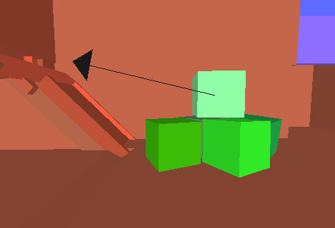

UDN
Search public documentation:
PhysXProfilingHome
日本語訳
中国翻译
한국어
Interested in the Unreal Engine?
Visit the Unreal Technology site.
Looking for jobs and company info?
Check out the Epic games site.
Questions about support via UDN?
Contact the UDN Staff
中国翻译
한국어
Interested in the Unreal Engine?
Visit the Unreal Technology site.
Looking for jobs and company info?
Check out the Epic games site.
Questions about support via UDN?
Contact the UDN Staff
UE3 Home > Performance, Profiling, and Optimization > Profiling PhysX Physics Simulations
Profiling PhysX Physics Simulations
Overview
STAT Comannds
STAT PHYSICS
TheSTAT PHYSICS command shows statistics about the PhysX phsyics engine.
- Novodex Allocator Time - Allocating memory to PhysX.
- Physics Stats Time - Capturing stats for the physics system.
- Fluid Mesh Emitter Time -
- Broadpahse GetPairs Time -
- Broadphase Update Time -
- Nearphase Time -
- Solver Time -
- Substep Time - Average substep time.
- Phys LineCheck Time -
- Phys Wait Time -
- Phys Events Time -
- Fetch Results -
- Start Physics Time -
- Total Dynamics Time -
- Novodex Allocation Size - Total amount of memory allocated to PhysX.
- Novodex Allocation Count - Total memory allocations to PhysX.
- Num Substeps - The number of sub steps the time step is divided into.
- Total SW Dynamic Bodies - Number of dynamic actors present in the scene for the current simulation step.
- Awake SW Dynamic Bodies - Number of dynamic actors which are not part of a sleeping group(island).
- Solver Bodies - Number of solver bodies present in the current step(i.e. the number of bodies subject to constraints). Not supported in 2.6.
- Num Pairs - Number of shape pairs present in the scene for the current simulation step.
- Num Contacts - Number of contacts present in the scene for the current simulation step. Not supported in 2.6.
- Num Joints - Number of joints in the scene. Note that this number also includes all "dead joints" in the scene (see NxScene.releaseActor).
- Num ConvexMesh - Total number of PhysX convex meshes in the scene.
- num TriMesh - Total number of PhysX triangle meshes in the scene.
STAT PHYSICSCLOTH
TheSTAT PHYSICSCLOTH command shows information about PhysX cloth simulations.
- Total Cloths - Total cloth simulations.
- Active Cloths - Active cloth simulations.
- Active Cloth Vertices - Number of vertices being simulated in active cloth simulations.
- Total Cloth Vertices - Total cloth vertices in all cloth simulations.
- Active Attached Cloth Vertices - Number of attached vertices in active cloth simulations.
- Total Attached Cloth Vertices - Total attached vertices in all cloth simulations.
STAT PHYSICSFIELDS
TheSTAT PHYSICSFIELDS command shows information about PhysX force fields.
- CylindricalForceFieldTick - Ticking cylinder force fields.
- RadialForceFieldTick - Ticking radial force fields.
STAT PHYSICSFLUID
TheSTAT PHYSICSFLUID command shows information about PhysX fluid emitters.
- PhysXEmitterVertical Tick Time -
- PhysXEmitterVertical Sync Time -
- Total Fluids - Total PhysX fluid simulations.
- Total Fluid Emitters - Total PhysX fluid emitters.
- Active Fluid Particles - Number of fluid particles in active simulations.
- Total Fluid Particles - Total fluid particles.
- Total Fluid Packets - Total fluid packets.
In-Game Visualization
NXVIS command can be used with one of a great deal of options to display various data of the physics simulation directly in the viewport during play. This provides the ability to see exactly what is going on with complete interactive control.
For example, physics collision primitives can be displayed by using the NXVIS COLLISION command:
A complete list of the available options for the NXVIS command and descriptions of each can be found in the Physics Commands section of the Console Commands page.
PhysX Visual Debugger
Download and Installation
The PhysX Visual Debugger can be obtained from nVidia's Developer Support site. Simply navigate to the following location:- Online Support > Downloads > PhysX Tools
Performing a Debugging Session
With the application open, you can connect to the debugger from the game using the following console command:- Original Command
- nxvrd connect [IP address of host] - Provides object debugging
- New commands
- nxpvd connect_object [IP address of host] - provides object debugging
- nxpvd connect_profile [IP address of host] - provides profiling debugging for APEX
- Original Command
- nxvrd disconnect
- New commands
- nxpvd disconnect
- Open the All Objects panel or tab if it is not already visible.
- Expand the NxScene item in the list view and select "Scene stats"
- In the Inspector window in the left, find "Number of actors"
- Select "Graph Number of actors for Scene stats"
- This should bring up a new tab on the right that shows a timeline of the number of physics actors are in the scene.
| Command | Description |
|---|---|
| Alt + Z | Focus on the selected actor |
| Alt + T | Track the selected actor |
Annotations
Annotations allow you to mark interesting frames and properties so they can be quickly jumped to and viewed at any time. This is useful if you want to pass PVD files around (to the PhysX Support team), people can just click the annotation and the PVD will jump to that interesting frame. E.g "Box starts to penetrate from this frame". To create an Annotation:- Go to the frame where something interesting occurs and press Ctrl + Alt + A. The Create Annotation dialog will appear:
- Enter the Name and Description for the new annotation:
- Click the button to create the annotation. It will then be visible in the Annotations panel:
Preferences
The preferences panel in the PhysX Visual Debugger allows you to configure the display of additional info int he viewports, where files are saved, how viewport navigation works, and much more. The Preferences panel can be accessed from the View menu: Capture & Playback The Capture & Playback preferencesallow you to configure how data is captured and displayed. The settings that are of particular interest here are:- Temp Directory - This allows you to specify the directory where the temporary files are created and stored.
- Navigation Scheme - This sets how the viewport is navigated. The Maya scheme makes selecting actors a simple one-click operation, which can be helpful.
- Contacts - Display collision contacts.
- Bounding Boxes - Display bounding boxes for actors.
- Center of Mass - Display the centers of mass for actors.
- Frames - Display coordinate reference frames.
- Velocities - Display velcoties for moving actors.
 - Transparency - Draw actors as transparent.
- Transparency Amount - Determines how transparent actors are drawn when using transparency.

- Gizmo Scale - The size of the gizmos used when drawing frames, centers of mass, etc.
- Culling Far Distance - How far away objects are drawn in the viewport.
- Culling Near Distance - How close objects are drawn in the viewport.
- Camera Speed Scale - The speed at which the camera moves when navigating the viewport.
- Orientation - Sets the orientation to left- or right-handed.
- Up Axis - Sets which axis is used as the up axis in the viewport.